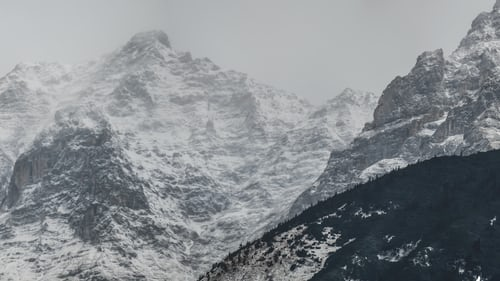
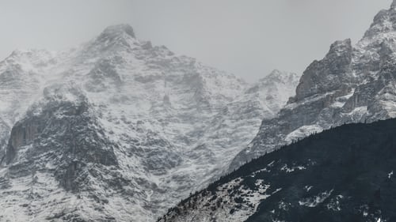

Traveller
Excursions
in the alps
Choose your trip
We choose hotels which offer a great location, a high standard of comfort and quality, and a solid value to
our guests. These inns offer a superbly satisfying mix of a welcoming atmosphere, traditional cuisine, and
authentic charm. They are typically small, independently-owned properties which reflect the character and
hospitality of the surrounding alpine community. We know the owners personally, have a longstanding
relationship with them, and we find they bend over backwards to provide our guests with an exceptional
experience.
2019 Tour Dates
- Sept 19 - 29 - Deluxe Haute Route– Chamonix to Zermatt – Classic trek has a new standard
- Sept 26 - Oct 5 - Scenic Alps by Rail– The Grand Train Tour of Switzerland
- Sept 29 - Oct 5 - Discover Swiss Cuisine - Italian Inspired - A culinary adventure in Lugano
- Oct 9 - 18 - Scenic Alps by Rail – The Grand Train Tour of Switzerland
- Dec 3 - 11 - Christmas in Switzerland - Enjoy authentic Switzerland at its holiday best
- Dec 5 - 13 - Christmas in Switzerland - Enjoy authentic Switzerland at its holiday best
.jpeg)


 
